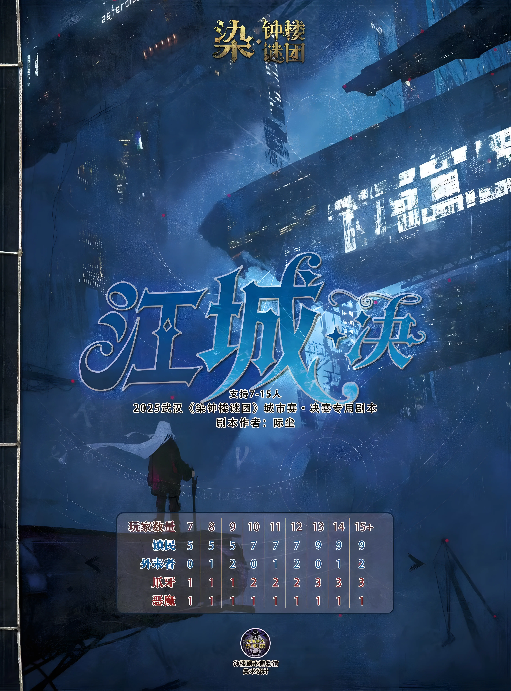

江城，一座被霓虹与阴影共同笼罩的城市。 高楼之上的灯火彻夜不眠，街道上的车流如同永不停歇的血液，在这座钢铁森林中流淌。人们习惯了城市的喧嚣，却忘记了——越是繁华的地方，越容易藏匿无法言说的秘密。 一场突如其来的事件，将一群毫无关联的人卷入其中。 有人追寻真相，有人隐藏身份；有人试图守护他人，有人却在黑暗中等待时机。 调查员拿起线索，试图拼凑出被掩埋的过去；占卜师窥探命运，却无法看清自己的终局；艺术家在虚假与真实之间寻找答案；而那些看似普通的陌生人，也许早已戴上了另一张面孔。 在这座城市里，谎言可以成为保护，真相也可能成为致命的武器。 当夜幕降临，江城的街灯一盏盏亮起，一场关于信任、背叛与选择的游戏悄然开始。 没有人知道，谁是真正的朋友，谁只是伪装的敌人。 没有人知道，那些被隐藏的秘密，究竟是在等待被揭开——还是等待吞噬所有知晓它的人。 直到最后一刻。 当钟声响起，江城的命运将迎来裁决。 欢迎来到《江城·决》。 在这里，每个人都有自己的答案。 而你，是否能找到真正的真相？
